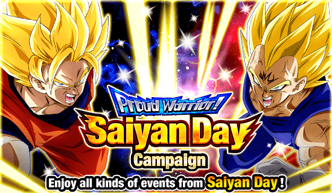
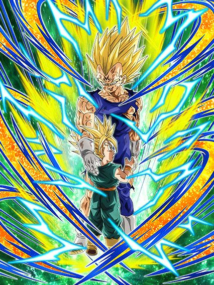
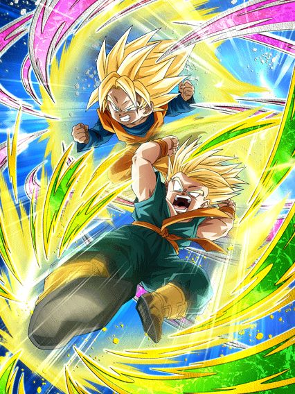
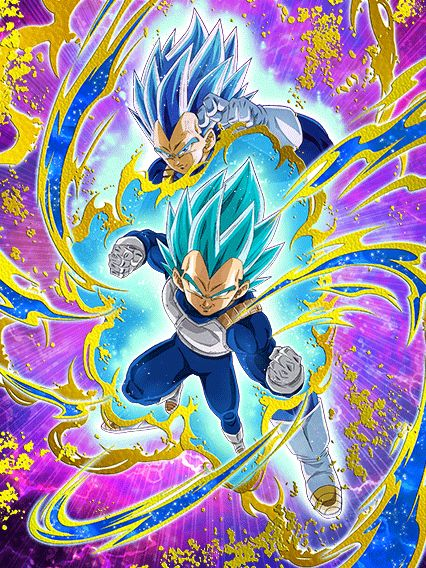
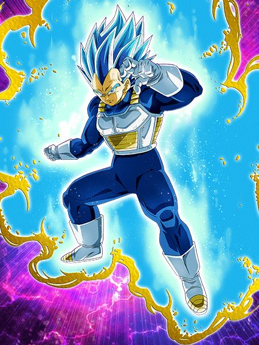
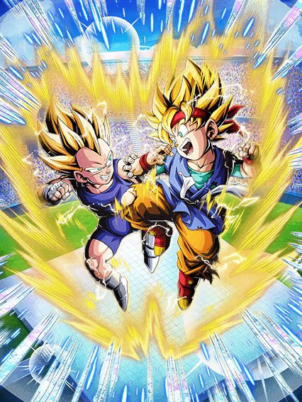

Saiyan Day fascinante.
Mais um Vegeta para o Saiyan Day, e a grande novidade do Global é que eles colocaram o Goku Jr. e Vegeta Jr. F2P adiantados pra cá, já que eles vieram no aniversário do JP, meio estranho mas ok.

Ele realmente precisa de um Trunks.
O Majin Vegeta é um personagem defensivo, e eu digo isso logo de cara pq o dano dele é podre podre, ele contribui mais com outras habilidades que ele tem
Bom, o mais complicado do Majin Vegeta é ativar a animação de intro dele, já que você precisa ter um aliado que tenha "Trunks" no nome (isso é bem útil pois inclui cards além do Trunks sozinho), e a intro é quase obrigatória pro Vegeta ser bom
A intro do Majin Vegeta tem uma animação e OST linda e dá 30% de redução de dano pro resto da partida, então já tá ai o valor dela
Bom, o Vegeta dá mais dano e muda orbs aleatoriamente pra INT, mas só se você estiver abaixo de 88% de HP, o que honestamente é bem horrível já que você não deveria evitar ficar com a vida cheia
Caso você pegue 3 orbs, o Vegeta ganha mais defesa, e se você pegar 6, ele ganha +20% de redução de dano, totalizando 50% se juntar com a redução da intro
Bom, tá aí o problema óbvio do card né, não tem nenhum Trunks que você possa usar que não corre risco de morte iminente nos eventos
Não só isso, mas o Vegeta também tem uma Active Skill linda demais, mas que quase não dá dano, e só se salva pq ela crita garantido
Eu amo esse card e ele consegue tankar bem, mas ele infelizmente tá muito restrito pra fazer qualquer coisa
Atualização Junho de 2022: O Vegeta ganhou um time inteiro e um parceiro de links perfeito: Vegeta e Trunks LR
Obrigado Dokkan por salvar esse card, sabia que havia esperança.

Eu acho que estou sem palavras.
Esses pirralhos miseráveis tem de tudo no kit deles e ainda sim conseguem não ajudar em nada no time
Eles tem mais defesa e 50% de chance de desvio no slot 1, mas em qualquer slot eles levam hit kill dos bosses pq eles são estupidamente imprestáveis
Esses caras tem a audácia de buildar 50% de ATK e DEF com 5 ataques e outros 50% desviando 5 vezes, e AINDA ASSIM são inúteis
Eles ganham mais ATK e DEF caso tenha um Vegeta no time, mas eles só tão atrapalhando mesmo
Eu já vi personagens secundários que não tem nada haver com o principal, ou que não ajudam ele em específico, mas MLK, esse card exala podridão
Ódio.

Ué, não entendi, o EZA mudou alguma coisa na forma base desse cara? Que estran-
Não ironicamente as únicas mudanças na passiva do Vegeta foram um aumento nos valores de ATK e DEF dele, e um aumento na DEF extra que ele builda, só isso
A "maior mudança" que o Dokkan acha que fez é que o Vegeta agora lança 2 adicionais com 10% DE CHANCE DE SEREM SUPER ATTACK, certamente isso irá quebrar o meta
Bom, eles também aumentaram um pouco a chance de ele se transformar na luta, já que foi de 30% pra 40% de chance de ele evoluir depois do turno 4

Acredite se quiser, mesmo transformado, os 10% seguem do mesmo jeito.
Bom, o Vegeta agora ganha 100% de DEF a mais quando faz um super, que é um buff bem respeitável pelo menos
Não é muito, mas é alguma coisa né
Em geral, EZA bem fraquinho, mas não horrível o suficiente pra eu começar a xingar o card nem nada
Ele é usável dependendo do evento.

Oq eles tão fazendo aqui?
Esses caras tem o stack de ATK mais vazio existente, é bizarro
Eles stackam 30% de ATK em ambos supers, tem adicionais no próprio kit já, e ainda sim o dano deles é medíocre
Bom, esses caras tem um kit muito restrito e em geral ruim, então é complicado slk
Pra começar, pra lançar um adicional com só 30% de chance de ser um Super Attack, esses caras precisam pegar 5 orbs, só que eles não são orb changers, então já começa de forma horrível né
Eles tem outro adicional de 30%, mas esse só se tiver um inimigo Goku's Family ou Vegeta's family, então boa sorte nesse rolê
Por sinal, esses caras buildam míseros 70% de DEF com 7 ataques, é quase impossível de ver eles full buildados, e ainda assim eles não vão ser bons
Em geral, é um card bom, com uma proposta legal e boas referências a outros cards de Goku e Vegeta, mas os caras na Akatsuki olharam e pensaram "Eles são F2P, deixe o kit deles horrivelmente mid."
Você chegou ao fim dessa página!
Obrigado por ler tudo, e fica a vontade pra ver outras